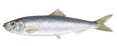
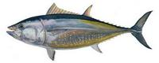

Dalmacija ribolovd.o.o.
Dalmacija ribolovd.o.o.pilchard, anchovy & bluefin tuna fishing
Pilchard or sardine (Latin Sardina pilchardus) is economically one of the most important fish of the Adriatic Sea. The annual catch of sardines is almost 60% of the total Adriatic catch of marine fish. Sardine meat is very savory and nourishing due to a significant percentage of fat, and therefore very popular seafood. Sardines are rich in omega-3 fatty acids, which reduce the occurrence of cardiovascular disease.
In the past, sardines had an important role in the traditional menu of our ancestors. Although it has historically been known as poors food, sardines are valued by connoisseurs — especially the famous Croatian brined pilchard. Fishing for sardela or sardina (Sardina pilchardus) on the coasts of Dalmatia and Istria began thousands of years ago. The region was part of the Roman Empire, and has always been sustained through fishing mainly sardines. All along the coast there are many towns that promote the age-old practice of fishing by lateen sail boats for tourism and on festival occasions. Today, our industrial producers continue this tradition.
Pilchard as a fish species reaches up to 24 cm in length and a weight of 0.08 kg. Average caught weight is about 0.03 kg (30-35 pieces per 1 kg). Pilchard has a well developed tail and dorsal fin. The upper side is oliveblue colored with a large longitudinal blue belt on each side, while the lower side is silver. Pilchard schools are spreaded on almost entire Adriatic coast. Although uniformly distributed, dense settlements concentrate on two hunting areas: central—southern Dalmatian islands and the North and Kvarner region.
The most important gear is an encircling net, particularly the purse seine. Many modifications of encircling nets are used, including traps or weirs. The latter are stationary enclosures composed of stakes into which schools of sardines are diverted as they swim along the coast. The fish are caught mainly at night, when they approach the surface to feed on plankton. After harvesting, the fish are immediately "shocked" by submerging in ice to preserve freshness.
European Anchovy (Latin Engraulis Encrasicolus) is the main commercial anchovy species in Adriatic sea. It belongs to family Engraulidae similar to pilchard or herring, but they are found away from shore (real pelagic fish). They are found in scattered areas throughout the world's oceans, but are concentrated in temperate waters, and are rare or absent in very cold or very warm seas.
 Large schools can be found in shallow, brackish areas with muddy bottoms, as in estuaries and bays. Anchovies are abundant in the Mediterranean. In Adriatic sea it is found areas not deeper than 300 m, but mostly concentrated in areas with depth between 30 and 100 m. It grows up to 20 cm and weighs about 0,05 kg. The upper side is oliveblue colored with a large longitudinal blue belt on each side, while the lower side is silver.
Large schools can be found in shallow, brackish areas with muddy bottoms, as in estuaries and bays. Anchovies are abundant in the Mediterranean. In Adriatic sea it is found areas not deeper than 300 m, but mostly concentrated in areas with depth between 30 and 100 m. It grows up to 20 cm and weighs about 0,05 kg. The upper side is oliveblue colored with a large longitudinal blue belt on each side, while the lower side is silver.
Economically, anchovies are very significant species in Adriatic fishing. Historically it was not as significant as the pilchard because it was harder to navigate to its pelagic settlements, but with modern fishing boats and equipment it became important. Most of caught anchovies are processed and exported, but we mainly use it as tuna food and only surplus is processed and marketed. It is caught similar way as pilchard, with the same tools.
Name tuna is very old, and it takes roots from Ancient Greek philosopher and scientist Aristotel. Even in those old times Aristotel was fascinated by tuna's long and fast swimming abilities. Name tuna translated form old Greek would be a "hasty wanderer". There are historical documents from that time that describe tuna fishing in Adriatic Sea, and tastiness of tuna's meat.
Tuna is a carnivore, primarily feeding of small bluefish species like pilchard and mackerel. It is one of the rare endothermic (warm-blooded) fish, and in contrary of dry land endothermic animals it doesn't keep it's body temperature inside narrow margin. Tuna's body temperature changes with water temperature, enabling it to migrate between very different environments, so tuna can be found from warm seas like Mediterranean or Caribbean to the cold coasts of Norway or Labrador.
Their metallic blue coloring on top and shimmering silver–white on the bottom helps camouflage them from above and below. Their torpedo-shaped, streamlined bodies are built for speed and endurance. Even submarine engineers studied their shape and swimming mechanism. They even have several stability fins towards their tail. Bluefin tuna has very effective circulatory system with high hemoglobin concentration and exceptionally thin water-blood barrier that enables efficient oxygen intake.
{kind=link}
{kind=link}